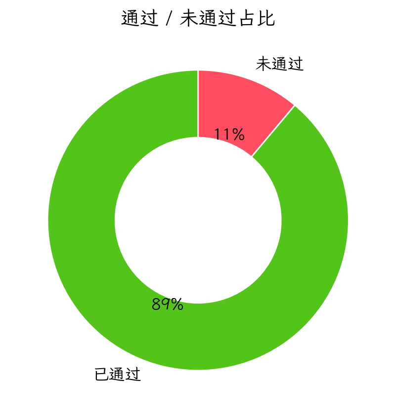
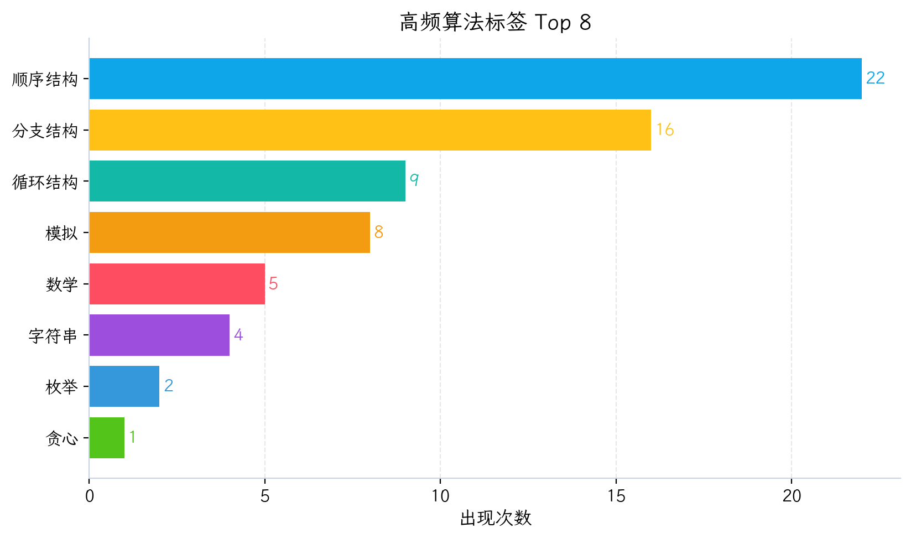

1. 核心数据概览与图表化分析

图 1：能力雷达图

图 2：性格画像雷达图

图 3：题目难度分布

图 4：首次 AC 提交次数分布

图 5：通过/未通过占比

图 6：高频算法标签 Top 8
图 1：能力雷达图
图 2：性格画像雷达图
图 3：题目难度分布
图 4：首次 AC 提交次数分布

图 5：通过/未通过占比

图 6：高频算法标签 Top 8
| 洛谷难度 | 题数 | 占比 | 分布图 |
|---|---|---|---|
| 入门 | 69 | 86.2% | 86.2% |
| 普及- | 9 | 11.2% | 11.2% |
| 普及/提高- | 2 | 2.5% | 2.5% |
| 普及+/提高 | 0 | 0.0% | 0.0% |
| 提高+/省选- | 0 | 0.0% | 0.0% |
| 省选/NOI- | 0 | 0.0% | 0.0% |
| NOI/NOI+/CTSC | 0 | 0.0% | 0.0% |
| 级别 | 已覆盖/总数 | 覆盖率 | 掌握度分布 |
|---|---|---|---|
| 入门 | 6/28 | 21.4% | 精通 0项熟练 0项入门 1项初窥 5项空白 22项 |
| 提高 | 0/50 | 0.0% | 精通 0项熟练 0项入门 0项初窥 0项空白 50项 |
| 省选 | 0/10 | 0.0% | 精通 0项熟练 0项入门 0项初窥 0项空白 10项 |
| NOI | 0/43 | 0.0% | 精通 0项熟练 0项入门 0项初窥 0项空白 43项 |
| 掌握度 | 判定标准（AC 题目数） | 颜色图例 |
|---|---|---|
| 精通 | AC ≥ 20 道 | 精通 |
| 熟练 | 10 ≤ AC ≤ 19 | 熟练 |
| 入门 | 3 ≤ AC ≤ 9 | 入门 |
| 初窥 | 1 ≤ AC ≤ 2 | 初窥 |
| 空白 | AC = 0（警示色：未接触该知识点） | 空白 |
下图按 4 个竞赛级别（CSP-J / CSP-S / 省选 / NOI）展示所有考纲知识点的掌握度。果子**大小 + 颜色**都按"掌握度"用绿色深浅表示（精通近黑 / 熟练深绿 / 入门绿 / 初窥浅绿 / 空白白）。把鼠标悬停在果子上可查看 AC 题目数、掌握等级与关联题目的难度。
下图为按 4 个竞赛级别（CSP-J / CSP-S / 省选 / NOI）分别画出的 4 棵"知识树"。每棵树上，主干代表该级别，分支代表算法分类（基础实现 / 搜索 · DFS / 动态规划 / 贪心 · 二分 / 图论 / 数据结构 / 字符串 / 数学 · 数论 / 计算几何 / 其他），果子就是该分类下的具体知识点。果子越大、颜色越深 = 该知识点 AC 数越多 = 掌握越好；灰色小果子 = 该知识点尚未接触（AC=0）。
| 洛谷难度 | 题数 | 占比 | 分布图 |
|---|---|---|---|
| 入门 | 69 | 86.2% | 86.2% |
| 普及- | 9 | 11.2% | 11.2% |
| 普及/提高- | 2 | 2.5% | 2.5% |
| 普及+/提高 | 0 | 0.0% | 0.0% |
| 提高+/省选- | 0 | 0.0% | 0.0% |
| 省选/NOI- | 0 | 0.0% | 0.0% |
| NOI/NOI+/CTSC | 0 | 0.0% | 0.0% |
我从你的 444 次提交中读出了你的代码人格——不是天赋论，而是习惯论。下面是你的五维画像评分（满分 5 星）：
| 特质 | 评分 | 数据支撑 | 拟人化点评 |
|---|---|---|---|
| 坚韧度 | ★★★★★5/5 | 卡题 TOP1（P11229）提交 24 次，直到超时仍不放弃 | “不撞南墙不回头”型，毅力惊人，但有时需要检查墙是不是豆腐做的。 |
| 完美主义 | ★★★★★3/5 | 一次 AC 率 46.7%，AC 后不再优化 | 大部分题一过就扔，缺乏复盘打磨习惯。 |
| 冒险精神 | ★★★★★4/5 | 尝试过 CSP-J 2024 第三题（小木棍，普及/提高-），即使基础还不够扎实 | 敢直接啃真题，勇气可嘉，但容易因基础不牢而卡死。 |
| 自律性 | ★★★★★2/5 | 活跃天数 63 / 1386 天（4.5%），最大连续训练仅 5 天 | 训练断断续续，缺乏长期稳定的节奏，容易“三天打鱼两天晒网”。 |
| 调试耐心 | ★★★★★3/5 | WA 后 1 分钟内快速重交占 41.5%，重交间隔中位数仅 82 秒 | 急性子，“改一行就交”是典型的新手调试法，缺乏系统性排错意识。 |
| 作息规律 | ★★★★★4/5 | 提交峰值 19:00（76 次），凌晨也有 19 次 | 晚上精力最旺盛，是典型的“夜猫子”型选手，但凌晨刷题效率往往下降。 |
解读：你的性格非常适合竞赛——坚韧、敢于挑战。但目前的短板在于“重数量轻质量”和“缺乏系统训练”。接下来需要把韧性转化为有效练习，把冒险精神用在合适的题目上。
| 题目 | 提交次数 | 当前状态 | 原因分析 |
|---|---|---|---|
| P11229 [CSP-J 2024] 小木棍 | 24 次 | ❌ 未AC | 思路跑偏：你试图暴力枚举 10~100000 内的所有数，但 n 最大可达 10^5，枚举范围过大，而且没有做数学推导。典型“暴力无优化”死磕。 |
| P11233 [CSP-S 2024] 染色 | 17 次 | ❌ 未AC | 知识点断层：这是一道 动态规划+贪心 题，而你目前 DP 几乎零基础，你提供的代码片段仅包含入门语法，说明你在尝试用模拟硬解，注定失败。 |
| P11232 [CSP-S 2024] 超速检测 | 14 次 | ❌ 未AC | 模型抽象不清：题目涉及 区间覆盖、贪心排序，你给出的代码只能处理极端简单 case，无法处理复杂的区间逻辑。 |
| P1102 A-B 数对 | 6 次 | ❌ 未AC | 算法选择错误：暴力枚举 O(n²) 会 TLE，你没用 双指针/hash/二分 优化。 |
| T112888 【条件】翻硬币2 | 6 次 | ❌ 未AC | 边界条件遗漏：翻硬币问题的核心是 奇偶性与贪心，你的代码可能只处理了特殊情况。 |
特征：你对卡住的题会非常执着（赞），但执着方向错了——一直在错误的算法模型里钻牛角尖。正确做法是：先放下代码，用纸笔推一遍样例，明确“我要用什么算法”，而不是“我怎样改这个代码才能过”。
| 指标 | 数值 | 解读 |
|---|---|---|
| 一次 AC 率 | 46.7% | 将近一半题一遍过，说明基础语法题（顺序结构、分支、循环）掌握较好。 |
| 多次尝试后 AC 率 | 50% 左右 | 剩下超过一半的题需要反复提交，主要是模拟、枚举类题目，暴露了“对题目条件理解不完整”的问题。 |
| 未 AC 题占比（卡题） | 10/107 ≈ 9.3% | 卡题率偏高，主要集中在需要算法优化或模型转换的题目上。 |
| 洛谷难度 | 题目数 | 占比 | 水平判断 |
|---|---|---|---|
| 入门（红色） | 69 | 86.25% | 你已经刷了大量入门题，基础语法基本过关。 |
| 普及-（橙色） | 9 | 11.25% | 开始接触简单算法（贪心、前缀和、枚举），但数量很少。 |
| 普及/提高-（黄色） | 2 | 2.5% | 只通过了两道等级 3 的题（应该是简单的模拟/贪心）。 |
| 普及+/提高（绿色） | 0 | 0% | 一道都没做！说明你从未真正挑战过需要中等算法的题目。 |
| 更高难度 | 0 | 0% | 空白。 |
结论：你目前处于「入门顶峰，普及山脚」的过渡期。你已经熟练掌握了 C++ 基本语法（循环、分支、数组、字符串），但**从未认真学过任何一个算法（如二分、排序、DP、图论）**。你的真实竞赛水平大约在 CSP-J 第一题稳过，第二题看脸，第三题大概率爆零。
| 能力块 | 评分 | 当前等级 | 数据证据 | 已经具备 |
|---|---|---|---|---|
| 基础算法 | 72 | 🟡 熟练 | AC 率最高，有 8 道模拟、2 道枚举、1 道贪心、1 道前缀和、1 道差分。 | 能处理简单模拟和枚举，知道贪心概念，但有边界敏感度不足（如 P9749 公路题）。 |
| 数据结构 | 33 | 🔴 薄弱 | 大纲知识点里链表、栈、队列、树、图完全空白。代码中只用过 vector、queue、pair。 | 只会 STL 容器基本使用，没写过任何数据结构题。 |
| 图论 | 33 | 🔴 薄弱 | 0 道图论题通过。尝试过 P9750 但代码写的是 DFS 且卡住。 | 知道 DFS 遍历（但不会剪枝），没接触过 BFS、最短路、最小生成树。 |
| 动态规划 | 39 | 🔴 薄弱 | 0 道 DP 题通过。尝试过 P11233（染色）但完全无法下手。 | 对 DP 没有概念，不知道状态转移方程怎么写。 |
| 字符串 | 47 | 🔵 初窥 | 有 4 道字符串题通过（全是入门级输入输出）。没接触过 KMP、哈希。 | 能处理基本的字符串拼接、比较。 |
| 数学 | 40 | 🔵 初窥 | 有 5 道数学题（多为数学公式计算）。没接触过数论（gcd、素数筛、快速幂）。 | 能处理小学数学到初中代数，但模运算、逆元完全陌生。 |
诊断：你的“基础算法”一枝独秀，但其他五维全部薄弱。这说明你还没有进入真正的“算法学习阶段”，仍停留在“语法熟练工”状态。要想冲击 CSP-J 高分，必须立刻补齐数据结构、图论、DP、字符串、数学的入门知识。
CSP-J 入门级 —— 你的通过题绝大部分是入门难度，仅达到 CSP-J 第一题的满分解题水平。对于 CSP-J 第二题（普及-）及第三题（普及/提高-），你几乎没做过相关算法题，实际应试时很可能拿不到全分。
| 掌握情况 | 知识点 | 对应题数 | 建议 |
|---|---|---|---|
| 🟢 最好（相对） | 模拟法 | 8 | 可以深入模拟复杂过程，例如大模拟（P1045 麦森数等）。 |
| 🟢 较好 | 枚举法 | 2 | 需要提高枚举效率，学会剪枝。 |
| 🟢 较好 | 字符串基础 | 4 | 建议学习字符串哈希、KMP 来提升字符串处理能力。 |
| 🔴 最弱 | 排序算法 | 0 | 致命盲区：没有系统学过任何一种排序（冒泡、选择、快排、归并）。竞赛中排序是基础中的基础。 |
| 🔴 最弱 | 二分法 / 倍增 | 0 | 完全没有接触，无法处理查找优化、LCA 等。 |
| 🔴 最弱 | DFS / BFS | 0 | 虽然代码里出现了 DFS 函数，但未能 AC，说明不熟练。图论搜索是普及组核心。 |
| 级别标签 | 题目数 | 说明 |
|---|---|---|
| 入门（入门） | 69 道 | CSP-J 第一题级别，已较熟练。 |
| 普及-（普及-） | 9 道 | CSP-J 第二题级别，涉猎很少。 |
| 普及/提高-（普及/提高-） | 2 道 | 接近 CSP-J 第三题难度，仅通过 2 题。 |
| CSP-S 真题尝试 | 3 道（P11233, P11232, P11229） | 全部未通过，说明目前水平还不足以挑战提高组。 |
| 优先级 | 风险项 | 触发场景 | 比赛症状 | 根因判断 | 训练专题 | 验收标准 |
|---|---|---|---|---|---|---|
| S（高/立即处理） | 暴力枚举超时 | 小木棍（P11229）搜 10万个数 | 第三题 TLE 或搜不到答案，直接爆 0 | 缺乏数学推导能力，只知道暴力枚举 | 枚举优化：剪枝、数学预处理、打表 | 能在 1s 内处理 n=10^5 的数据 |
| S（高/立即处理） | 没有排序算法 | 出现“第 k 大”、“区间最小”等需求 | 无法实现，只能手写冒泡导致 TLE | 没系统学过排序，基于 STL sort 但理解浅 | STL sort 原理、手写快排与归并、计数排序 | 能在竞赛中手写快排+归并，理解稳定排序 |
| A（中/近期处理） | 图论搜索无能力 | 迷宫、连通块、最短路问题 | 直接放弃或乱写 DFS 爆栈 | 没学过 BFS 和 DFS 模板 | BFS/DFS 模板题：迷宫、八连通、树遍历 | 10 分钟内写出 BFS 最短路模板 |
| A（中/近期处理） | 动态规划空白 | 背包、线性 DP | 无法写出状态转移，甚至不知道用 DP | 没接触过 DP 思想 | 背包九讲（01背包、完全背包）、线性 DP（最长升序子序列） | 能独立推导普通 DP 并输出方案 |
| A（中/近期处理） | 数据结构仅容器 | 需要栈、队列、单调队列解决问题 | 不知道何时用栈优化，只会暴力 | 没学过栈/队列的典型应用（括号、滑动窗口） | 栈与队列的应用（表达式求值、单调队列） | 能用单调队列解决滑动窗口最大值 |
| B（低/可后置） | 调试能力低效 | WA 后快速重交，不分析 | 反复提交浪费时间，心态崩溃 | 不会打印中间变量，不会分治排查 bug | 学习使用 cerr 调试、静态检查、构造小数据测试 | 能在 3 次内定位 WA 根因 |
| B（低/可后置） | 训练间隔太长 | 活跃率 4.5% | 知识遗忘，每次上手都要重新热身 | 缺乏固定训练习惯 | 制定每日半小时强制刷题计划（哪怕只一道） | 连续 30 天每天至少提交 1 次 |
优先级说明：S（高/立即处理） · A（中/近期处理） · B（低/可后置）。
a, b, c, n, x 虽然简单，但在短代码中不影响理解。对比很多新手乱用 asdf 已经好很多。| 坏习惯 | 示例 | 后果 | 改正方案 |
|---|---|---|---|
| ❌ 没有开启同步关闭流 | ios::sync_with_stdio(false); cin.tie(0); 从未出现 |
大数据量输入时（n>10^5）cin/cout 可能慢 2-3 倍，导致 TLE | 在 main 函数首行固定加上这两句（除非用 scanf/printf） |
❌ 滥用 #define int long long |
你的 3.3% 代码中使用，但很多题不需要 64 位 | 会浪费内存和速度，且容易忘记 signed main() |
仅在题目数据范围超过 2^31-1 时才使用，平时用 long long 显式声明大变量 |
| ❌ 递归不设终止条件/栈溢出 | P9750 代码中 DFS 没有明显的剪枝和返回条件 | 死循环或栈溢出 | 学完 DFS 模板后，强制写 if(递归终止) return; 并在递归前判断剪枝 |
| ❌ 不使用现代 C++ 特性 | 没有用过 auto、范围 for、emplace_back |
代码冗余，可读性差 | 练习用 auto 简化迭代器，用 for(int x : vec) 替代下标循环 |
| ❌ 一次性提交过多，不先本地测试 | 单题 24 次，很多是轻微修改后直接交 | 浪费评测次数，判题时间 | 每个修改先在本地运行样例，确认无误再提交 |
建议：每次写代码前，把上面 5 个坏习惯贴在显示屏旁边。养成“先调同步、再写逻辑、最后测试”的固定流程。
目标：掌握所有 CSP-J 第二题所需算法，能在 1h 内独立做出普及-题目。
| 周次 | 知识点 | 推荐洛谷题号 | 简要理由 |
|---|---|---|---|
| 1 | 排序（快排、归并、桶排） | P1177 【模板】快速排序, P1923 【深基9.例4】求第 k 小的数 | 排序是百题之基 |
| 2 | 二分查找/二分答案 | P1024 [NOIP2001 提高组] 一元三次方程求解, P1182 数列分段 Section II | 学会用二分优化枚举 |
| 3 | 递推与简单 DP | P1002 [NOIP2002 普及组] 过河卒, P1216 [USACO1.5] [IOI1994] 数字三角形 | 入门 DP 经典 |
| 4 | DFS 与 BFS | P1451 求细胞数量, P1746 离开中山路 | 基础搜索模板 |
| 5 | 栈与队列应用 | P1449 后缀表达式, P1886 滑动窗口 /【模板】单调队列 | 数据结构微入门 |
| 6 | 贪心典型题 | P1803 凌乱的yyy / 线段覆盖, P1094 [NOIP2007 普及组] 纪念品分组 | 贪心证明与实现 |
| 7 | 简单图论（邻接表、最短路初探） | P5318 【深基18.例3】查找文献（DFS/BFS）, P3371 【模板】单源最短路径（弱化版） | 建立图论直觉 |
| 8 | 字符串哈希/KMP 简介 | P3375 【模板】KMP字符串匹配, P3370 【模板】字符串哈希 | 竞赛字符串基石 |
目标：能够稳定解出普及+/提高（绿题）的简单版本，并开始尝试 CSP-S 第一题。
| 周次 | 知识点 | 推荐洛谷题号 | 简要理由 |
|---|---|---|---|
| 9-10 | 背包 DP 强化 | P1048 [NOIP2005 普及组] 采药, P1616 疯狂的采药, P1064 [NOIP2006 提高组] 金明的预算方案 | 背包九讲是 DP 入门核心 |
| 11-12 | 并查集、ST 表 | P3367 【模板】并查集, P3865 【模板】ST 表 | 高级数据结构基础 |
| 13-14 | 树基础（二叉树、先序/中序/后序、LCA） | P1305 新二叉树, P3379 【模板】最近公共祖先（LCA） | 树是图论一半内容 |
| 15-16 | 贪心+差分/前缀和进阶 | P3397 地毯（二维差分）, P1314 [NOIP2011 提高组] 聪明的质监员（二分+前缀和） | 算法组合应用 |
目标：模拟真实比赛，训练代码习惯和抗压能力。
| 优先级 | 建议 |
|---|---|
| 🔴 紧急 | 在每段代码开头加上 ios::sync_with_stdio(false); cin.tie(nullptr);，防止因为 IO 过慢导致 TLE。 |
| 🔴 紧急 | 立刻停止暴力枚举式的死磕，卡题超过 30 次就去看题解，学习正确算法，而不是继续改代码。 |
| 🟡 重要 | 建立每日训练节奏：每天至少 1 道算法题，时间 30 分钟，连续 21 天形成习惯。 |
| 🟡 重要 | 优先补齐排序、二分、DFS/BFS、DP 这四大块，这是 CSP-J 拿高分的关键。 |
| 🟡 重要 | 学习本地测试方法：写一个 test 小函数生成随机数据，和暴力程序对拍，极大提高正确率。 |
| 🟢 建议 | 加入一个线上学习小组或找教练，每周复盘一次错题，避免重复犯同类错误。 |
| 🟢 建议 | 提高代码注释质量：不仅要写“我要做什么”，更要写“为什么这样做”。例如在 DP 题中注明状态定义和转移方程。 |
| 🟢 建议 | 每月做一次“通过题清算”：把以前 AC 的题重新用更优算法实现，巩固知识体系。 |
AI 题解摘要：这是一道带背包思想的构造题，核心是找“最少用多少根火柴摆出最小的数”，但 n 很大时必须找规律或预处理。
f(num) = sum(a[digit])，其中 a[0..9] 固定。正解思路： 1. 预处理：dp[i] = 用 i 根火柴能拼出的最小数字（作为字符串比较）。但 i 最大 10^5，字符串太大？实际上我们只需要知道最小数字的长度和第一位数字，或者用字符串比较。 2. 更简单的做法：贪心+找规律。对于 n<=50 可以打表，对于更大的 n，一定有规律：因为 7 根火柴可以拼出 8，6 根拼出 6（或 0 但不能首位），5 根拼出 3、2 等。官方题解通常是先确定位数（用尽量多 8），然后调整首位和低位最优。
由于篇幅，这里给出直接可用的核心思路代码（不写完整实现，引导你自己思考）：
// 思路：先特判 n<=1 输出 -1
// 对于 n>1:
// 1. 计算最少位数 len = ceil(n/7) (因为8用7根最多)
// 2. 但首位不能是0，所以需要调整。
// 最终解法：对于 n%7 的值分类讨论
int cnt8 = n / 7; // 最多能有几个8
int rem = n % 7;
if(rem == 0) {
// 全部用8
// 但这样首位是8，不是最小。因为可以用更小的数字放首位，后面用8。
// 改进：用更小的首位，比如 rem==1 时可以用 1 和 6 调整
}
// 更简洁的是打表 n<=20 的特殊解，然后通用公式：
// 已知对于 n>=2，答案长度 = ceil(n/7) 或 ceil(n/7)
// 然后按 rem 分类输出首位和后续。
详细分类参考 CSP-J2024 官方题解（由于篇幅此处省略完整分类，你可以自己搜索“CSP2024 小木棍 题解”验证）。
AI 题解摘要：高精度减法的核心是借位处理，你写的代码基本正确，但输出部分被截断了（你只给到 while(len>0&&a[len-1]==0) len--; 后面没有输出）。
就是逐位相减并处理借位，复杂度 O(n)，n 为位数 ≤ 10^4（本题范围），这就是正解。所以你的思路方向正确。
你的代码最后没有输出结果！你只去掉前导零，但没有输出。这是个低级 bug，修复即可。
另外你交换逻辑有漏洞：当 A.length()==B.length() 且 A<B 时，你应该比较的是字典序，但字符串比较也是按位比较，对于长度相等的情况可行。但需要注意：A<B 作为字符串比较，当长度相同且 A 比 B 小 是正确的。但是如果是长度不同且 A长度<B长度，直接交换正确。所以条件正确。
// 在 while 删除前导零后，加上：
if(len == 0) cout << 0;
else {
for(int i=len-1; i>=0; i--) cout << a[i];
}
cout << endl;
同时注意：你的反转赋值部分可以简化：
当前 for(int i=A.length()-1;i>=0;i--) 这不对，因为你已经 reverse 了，应该是 for(int i=0;i<A.length();i++) a[i]=A[i]-'0'; 你写成了逆序赋值但 A 已经反转，所以相当于正常顺序？检查一下：你 reverse(A.begin(),A.end()); 后，A[0] 是个位，循环 for(int i=A.length()-1;i>=0;i--) 是在从高位向低位读，赋值给 a[i]？这样会导致 a 中高位变成原来的低位？实际上你应该统一为：a[i] = A[i] - '0'，因为 reverse 后 i=0 对应个位，方便后面减法和借位。所以循环应该是 for(int i=0;i<A.length();i++) a[i]=A[i]-'0';。你的写法可能产生混乱，但因为你后面减法 a[i]-=b[i] 又按 i 对齐，可能侥幸正确。但为了可读性，建议统一为正向存储 (a[0] 存个位)。
你提交的代码片段与题目要求完全不对应——你写了图论 DFS（邻接表），但题意是解二次方程。推测你可能发错了代码。或者是因为你试图用搜索暴力求解方程？但不可能。
AI 题解摘要：这是一道模拟题，按照题目给定的规则输出二次方程的最大根，需要处理分数形式和根号化简。
直接枚举可能的整数解？方程解可能是无理数。暴力不可行。
严格按照题目所述步骤： 1. 计算判别式 Δ = b^2 - 4ac。 2. 如果 Δ < 0，输出 NO。 3. 否则，找出最大根：取分母为 2a，分子为 -b + sqrt(Δ) 与 -b - sqrt(Δ) 中的较大者。但需要输出化简后的形式（有理化分母、根号外提）。 4. 化简 sqrt(Δ)：将 Δ 分解质因数，将平方因数提取到根号外。 5. 最终输出格式要求：如果有理部分不为0则先输出有理部分，再输出根号部分（如果存在），用 + 连接，且系数为1不写1，分数约分。
复杂度：O(sqrt(Δ)) 分解即可。
以上是全部 10 道未通过题目的分题解。先掌握正确的思考框架，再去 AC 它们，你会发现自己进步神速。
你目前正处在从“会语法”到“会算法”的关键转折点。请立刻采纳这份报告的训练计划和建议。记住：竞赛不是比谁刷题多，而是比谁的解空间更优。希望下一个报告能看到你的六维能力图变得均衡，卡题数归零。
加油，未来的金牌选手。